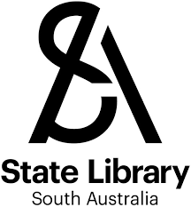

This overview is based on this XML output of the GLAMorous tool d.d. 14-03-2024.
It was generated using the GLAMorousToHTML code.
Also see the documentation of this tool.
This data is also available as an Excel file. More structured data formats (csv, json) will be added in the future.
Available languages
English (460)
German (31)
Egyptian Arabic (23)
Spanish (18)
Arabic (17)
Italian (11)
Japanese (11)
French (10)
Persian (9)
Russian (9)
Portuguese (7)
Chinese (6)
Nynorsk (5)
Polish (5)
Cebuano (4)
Swedish (4)
Urdu (4)
Czech (3)
Danish (3)
Malay (3)
Ukrainian (3)
Asturian (2)
Bangla (2)
Belarusian (2)
Bulgarian (2)
Catalan (2)
Finnish (2)
Georgian (2)
Hebrew (2)
Indonesian (2)
Korean (2)
Macedonian (2)
Nynorsk (2)
Serbian (2)
South Azerbaijani (2)
Uzbek (2)
Welsh (2)
Afrikaans (1)
Bosnian (1)
Chechen (1)
Cornish (1)
Dutch (1)
Hausa (1)
Irish (1)
Latvian (1)
Low Eastern Saxon (1)
Malayalam (1)
Occitan (1)
Serbo-Croatian (1)
Sorani (1)
Tagalog (1)
Tamil (1)
Vietnamese (1)
West Frisian (1)
English (460)
1905_South_Australian_state_election |
1906_South_Australian_state_election |
1925_in_Australia |
4-4-0 |
Ada_Crossley |
Adelaide |
Adelaide_Arcade |
Adelaide_Casino |
Adelaide_Educational_Institution |
Adelaide_Liedertafel |
Adelaide_Miethke |
Adelaide_Showground |
Adelaide_Town_Hall |
Adelaide_city_centre |
Adelaide_railway_station |
Air-tractor_sledge |
Alfred_Searcy |
Alfred_Stump |
Allahabad_(ship) |
Althorpe_Islands |
Amy_Grace_Wheaton |
Andamooka_Station |
Andrew_Tennant_(pastoralist) |
Angas_Parsons |
Angaston,_South_Australia |
Annesley_Junior_School |
Appila,_South_Australia |
Arc_welding |
Arcade_(architecture) |
Archibald_Weigall |
Arthur_Blyth |
Arthur_Searcy |
Attunga,_Toorak_Gardens |
Australian_Overland_Telegraph_Line |
Australian_Women's_Land_Army |
Australian_women_during_World_War_II |
Baker_ministry |
Barunga_Gap,_South_Australia |
Beaumont_House |
Beehive_Corner |
Benacre,_Glen_Osmond |
Benjamin_Boothby |
Bert_Edwards_(politician) |
Bickford's_Australia |
Big_Dipper_(Luna_Park_Sydney) |
Birkdale_(ship) |
Birks_Chemists |
Birralee,_Belair |
Bluecoat |
Bob_the_Railway_Dog |
Boston_Island |
Brougham_Place,_North_Adelaide |
Burke,_Wills,_King_and_Yandruwandha_National_Heritage_Place |
C._A._Hornabrook |
Cape_Horner |
Cape_Northumberland_(South_Australia) |
Casuarina_Islets |
Cavenagh,_South_Australia |
Charles_Beaumont_Howard |
Charles_Birks_&_Co |
Charles_Reade_(town_planner) |
Charles_Rischbieth |
Charles_Thomas_Hewett |
Charles_Winnecke |
Cheer-Up_Society |
Chief_of_Army_(Australia) |
Christ_Church,_North_Adelaide |
Christina_Smith_(missionary) |
City_of_Adelaide_(1864) |
Clare,_South_Australia |
Clayton_Wesley_Uniting_Church |
Colonel_Light_Gardens,_South_Australia |
Colonial_forces_of_Australia |
Commonwealth_Railways_G_class |
Commonwealth_Railways_KA_class |
Concordia_College_(South_Australia) |
Coomooroo,_South_Australia |
Corporate_Town_of_Wallaroo |
County_of_Blachford |
County_of_Fergusson |
County_of_Hanson |
County_of_Herbert |
County_of_Hindmarsh |
County_of_Jervois |
County_of_Kimberley |
Crown_Point_Station |
Cummins_House,_Adelaide |
Currie_Street |
D._&_W._Murray_Limited |
Dalgety_plc |
Dangerous_Reef |
Daniel_Garlick |
David_Unaipon |
Dawlish,_South_Australia |
Day_Bosanquet |
Devitt_and_Moore |
Dingley_Dell_Conservation_Park |
District_Council_of_Belvidere |
District_Council_of_Lucindale |
District_Council_of_Mobilong |
Don_Dunstan |
Donald_McLean_(pastoralist) |
Dry_Creek,_South_Australia |
Dry_Creek_explosives_depot |
Dulkaninna |
Dumbleton_Hall |
Early_naval_vessels_of_New_Zealand |
Edgar_Chapman |
Edmund_Wright_(architect) |
Edward_Henty |
Edwin_Thomas_Smith |
Ellen_(1883) |
English_and_Australian_Copper_Company |
Escape_Cliffs |
Essington_Lewis |
Eurelia |
Everard_Central,_South_Australia |
F._S._Crawford |
Fanny_Elizabeth_de_Mole |
Federated_Moulders'_(Metals)_Union_of_Australia |
Flying_Spur_(clipper) |
Fort_Hill_(Darwin) |
Frank_Magor |
Franklin_Street,_Adelaide |
Frederick_Bullock_(mayor) |
Frederick_George_Waterhouse |
Frederick_Metters |
Frewville,_South_Australia |
Gawler,_South_Australia |
Gawler_Belt,_South_Australia |
General_Post_Office,_Adelaide |
George_A._J._Webb |
George_Brookman |
George_French_Angas |
George_Searcy |
George_Vause_Birks |
German_Club,_Adelaide |
German_Creek,_South_Australia |
Gertrude_Halley |
Gilbert_Rotherdale_McMinn |
Gilberton,_South_Australia |
Glenelg,_South_Australia |
Glenelg_tram_line |
Goolwa_Barrages |
Goondah_railway_station |
Government_House,_Adelaide |
Governor_of_South_Australia |
Grace_Benny |
Great_Tea_Race_of_1866 |
Greenly_Island_(South_Australia) |
Greenly_Island_Conservation_Park |
Grenfell_Centre |
Grindal_Island |
H._A._Frost |
H._D._Packard |
HMAS_Parramatta_(D55) |
HMAS_Yarra_(D79) |
HMS_New_Zealand_(1911) |
Hamilton's_Ewell_Vineyards |
Hamley_Bridge,_South_Australia |
Harriet_Stirling |
Harry_Dickson_Gell |
Harry_Finn |
Helen_Mayo |
Henry_Eaton_(footballer) |
Henry_Edward_Downer |
Henry_Galway |
Henry_Kent_Hughes |
Henry_Mildred |
Henry_Roach |
Henry_Simpson_(shipping) |
Henry_Simpson_Newland |
Hermann_Homburg |
Hindley_Street |
Hindmarsh_Square_Congregational_Church |
Hindmarsh_Valley_Reservoir |
History_of_Adelaide |
History_of_Bickford's_Australia |
History_of_South_Australia |
History_of_the_Australia_men's_national_soccer_team |
Holden |
Horse_trams_in_Adelaide |
Hougomont_(barque) |
Hundred_of_Adelaide |
Hundred_of_Alma |
Hundred_of_Auld |
Hundred_of_Bagot_(South_Australia) |
Hundred_of_Balaklava |
Hundred_of_Barossa |
Hundred_of_Barunga |
Hundred_of_Belvidere |
Hundred_of_Bews |
Hundred_of_Blyth_(South_Australia) |
Hundred_of_Boucaut |
Hundred_of_Bowaka |
Hundred_of_Bray_(South_Australia) |
Hundred_of_Cameron |
Hundred_of_Campbell |
Hundred_of_Carawa |
Hundred_of_Coglin |
Hundred_of_Downer |
Hundred_of_Erskine |
Hundred_of_Finlayson |
Hundred_of_Finniss_(South_Australia) |
Hundred_of_Fisher |
Hundred_of_Forrest |
Hundred_of_Forster |
Hundred_of_Giles |
Hundred_of_Grace |
Hundred_of_Gregory |
Hundred_of_Gumbowie |
Hundred_of_Hague |
Hundred_of_Hay |
Hundred_of_Hutchison_(South_Australia) |
Hundred_of_Jutland |
Hundred_of_Kadina |
Hundred_of_Kapunda |
Hundred_of_Killanoola |
Hundred_of_Kondoparinga |
Hundred_of_Lacepede |
Hundred_of_Lewis |
Hundred_of_Louth |
Hundred_of_Mobilong |
Hundred_of_Morgan |
Hundred_of_Mount_Benson |
Hundred_of_Mudla_Wirra |
Hundred_of_Munno_Para |
Hundred_of_Murray |
Hundred_of_Nash |
Hundred_of_Neales |
Hundred_of_Ninnes |
Hundred_of_Noarlunga |
Hundred_of_Nunnyah |
Hundred_of_Nuriootpa |
Hundred_of_Oladdie |
Hundred_of_Para_Wirra |
Hundred_of_Parilla |
Hundred_of_Perlubie |
Hundred_of_Petina |
Hundred_of_Pichi_Richi |
Hundred_of_Pinnaroo |
Hundred_of_Port_Gawler |
Hundred_of_Reynolds |
Hundred_of_Ridley |
Hundred_of_Ripon |
Hundred_of_Roby |
Hundred_of_Ross |
Hundred_of_Rounsevell |
Hundred_of_Skurray |
Hundred_of_Smith |
Hundred_of_Stokes |
Hundred_of_Strathalbyn |
Hundred_of_Talunga |
Hundred_of_Tarcowie |
Hundred_of_Tatiara |
Hundred_of_Terowie |
Hundred_of_Townsend |
Hundred_of_Tungkillo |
Hundred_of_Wallaroo |
Hundred_of_Waroonee |
Hundred_of_Warrow |
Hundred_of_Whyte |
Hundred_of_Wiltunga |
Hundred_of_Wirreanda |
Hundred_of_Witera |
Hundred_of_Wokurna |
Hundred_of_Wonoka |
Hundred_of_Wright |
Hundred_of_Yackamoorundie |
Hundred_of_Yalpara |
Hundred_of_Yangya |
Hundred_of_Yatala |
Hundred_of_Yednalue |
Hundred_of_Yongala |
Inman_Valley,_South_Australia |
Islington_Railway_Workshops |
J._S._Reid |
Jack_Critchley |
Jacob_Hagen |
James_Alexander_Holden |
James_Hurtle_Fisher |
James_Jefferis |
James_Macgeorge |
James_Maughan |
James_Shaw_(mayor) |
Jessie,_South_Australia |
John_Baker_(Australian_politician) |
John_Barton_Hack |
John_Benjamin_Graham |
John_Brodie_Spence |
John_Dunn_Jr. |
John_Haimes |
John_Harvey_Finlayson |
John_Langdon_Bonython |
John_Lavington_Bonython |
John_Legoe |
John_Lorenzo_Young |
John_McDouall_Stuart |
Johnburgh,_South_Australia |
Kangaroo_Island |
Kapunda |
Kapunda_(ship) |
Kent_Town,_South_Australia |
Kent_Town_Brewery |
Killalpaninna_Mission |
King_William_Street,_Adelaide |
Kirkcaldy_railway_station,_Adelaide |
Klein_Point |
Levi_Isaacs |
Liberal_Movement_(Australia) |
Light_Square |
List_of_Australian_heads_of_government_by_time_in_office |
List_of_clipper_ships |
List_of_historic_houses_in_South_Australia |
List_of_horse-drawn_railways |
List_of_islands_of_Australia |
List_of_islands_within_the_Murray_River_in_South_Australia |
List_of_lighthouses_in_Australia |
List_of_maritime_disasters_in_the_19th_century |
List_of_massacres_of_Indigenous_Australians |
List_of_mayors_and_lord_mayors_of_Adelaide |
List_of_members_of_the_Order_of_the_Companions_of_Honour |
List_of_mosques_in_Australia |
List_of_people_legally_executed_in_South_Australia |
List_of_premiers_of_South_Australia_by_time_in_office |
List_of_shipwrecks_in_1908 |
List_of_state_heritage_places_in_the_District_Council_of_Grant |
Littleham |
Lochaber,_South_Australia |
Long_Island_Recreation_Park |
Louis_W._Yemm |
Louth_Island |
Luna_Park_Glenelg |
Luna_Park_Sydney |
Madeline_Rees_George |
Margaret_Brock_Reef |
Marree_Mosque |
Matthew_Goode_and_Co |
Maude_Mary_Puddy |
Medindie,_South_Australia |
Metters_Limited |
Milang_railway_line |
Military_history_of_Australia_during_World_War_II |
Minnie_A._Caine |
Mintaro,_South_Australia |
Moorook,_South_Australia |
Mount_Barker_Road |
Mount_Eba_Station |
Mount_Osmond,_South_Australia |
Mountifort_Conner |
Mud_Hut_(Knight's_Folly) |
Mundowdna_Station |
Murray_Bridge,_South_Australia |
Myrtle_Springs_Station |
Nackara,_South_Australia |
Neptune_Islands |
Newcastle_Waters_Station |
North_Arm_Powder_Magazine |
North_Terrace,_Adelaide |
Oregon_Pine_(schooner) |
Paratoo,_South_Australia |
Parliament_House,_Adelaide |
Parliament_of_South_Australia |
Parnaroo,_South_Australia |
Pearson_Island |
Pearson_Isles |
Percy_Correll |
Perry_Engineering |
Pilgrim_Uniting_Church |
Pink_Bay |
Police |
Port_Augusta_Town_Hall |
Postboy_(ship) |
Premier_of_South_Australia |
Prince_Alfred_College |
Rapid_Bay,_South_Australia |
Raymond_Leane |
Richard_Boucher_James |
Richard_Bullock_Andrews |
Richard_Butler_(Australian_politician) |
Richard_Sanders_Rogers |
Rivoli_Bay |
Robert_Caldwell_(Australian_politician) |
Robert_George_Thomas |
Robert_Spence_(bishop) |
Rodney_Cockburn |
Rosetta_Head |
Ross_T._Reid |
Rowland_Rees |
Rundle_Street |
SS_Waratah |
Sacred_Heart_College_(Adelaide) |
Sampson_Hosking |
Samuel_Davenport_(Australian_politician) |
Samuel_Smith_(winemaker) |
Society_for_Underwater_Historical_Research |
South_Australia_Police |
South_Australian_(clipper_ship) |
South_Australian_Brewing_Company |
South_Australian_Company |
South_Australian_Country_Fire_Service |
South_Australian_House_of_Assembly |
South_Australian_Mounted_Rifles |
South_Australian_Railways |
South_Australian_Railways_600_class_(steam) |
South_Australian_Railways_620_class |
South_Australian_Railways_700_class_(steam) |
South_Australian_Railways_710_class |
South_Australian_Railways_720_class |
South_Australian_Railways_F_class_(1902) |
South_Australian_Railways_P_class |
South_Australian_Railways_R_class |
South_Australian_Railways_S_class |
South_Australian_Tattersalls_Club |
South_Island_(South_Australia) |
Spats_(footwear) |
Spencer_Skipper |
Stanley_Price_Weir |
Stephen_King_(surveyor) |
Stephenston,_South_Australia |
Stump-jump_plough |
T._G._Waterhouse |
Taitsing_(clipper) |
The_Bat_(play) |
Theatre_Royal,_Adelaide |
Thomas_Elder |
Thomas_Good_(merchant) |
Thomas_Goode_(pastoralist) |
Todmorden_Station_(pastoral_lease) |
Tolley_family |
Topsy_Smith |
Tram_types_in_Adelaide |
Trams_in_Adelaide |
Trans-Australian |
Transport_in_South_Australia |
Ulrich_Hbbe |
Uniforms_of_the_Australian_Army |
University_of_Adelaide |
Victoria_River_Downs_Station |
Victoria_Square,_Adelaide |
Village_Settlements_(South_Australia) |
W._G._T._Goodman |
W._H._Burford_&_Sons |
W._P._Auld |
Walker_Brothers_(soap) |
Walter_J._Gollin |
Waterhouse_Natural_Science_Art_Prize |
West_End_Brewery_(Hindley_Street) |
White's_Rooms |
William_Finlayson_(churchman) |
William_Hayes_(pastoralist) |
William_Light |
William_Mills_(surveyor) |
William_Pullen |
William_Thornborough_Hayward |
William_Willshire_(policeman) |
Women_and_government_in_Australia |
Yalpara,_South_Australia |
Yandra |
Yatala_(clipper_ship)
German (31)
Adolf_Vinnen_(Schiff,_1892) |
Arthur_Blyth |
Arthur_Searcy |
Boston_Island_(South_Australia) |
Claude_Rains |
Commonwealth_Railways_GM-Class |
Day_Bosanquet |
Der_goldene_Hahn_(Roman) |
Douglas_Mawson |
Dry-Creek-Sprengstofflager |
Edmund_Colson |
Escape_Cliffs |
Geschichte_der_australischen_Luftfahrt_in_der_Antarktis |
Goldenes_Zeitalter_der_Antarktis-Forschung |
Goolwa_Barrages |
HMS_New_Zealand_(1911) |
John_Baker_(Politiker,_1813) |
Kapunda_(Schiff) |
Kulturareal_Desert |
Liste_der_Biografien/Rai |
Liste_der_Grokampfschiffe |
Liste_des_Commonwealth_Heritage_in_South_Australia |
Marree |
Militrgeschichte_Australiens_whrend_des_Zweiten_Weltkriegs |
Missionsstation_Killalpaninna |
North-Arm-Pulvermagazin |
Polymnia_(Schiff) |
Susanna_(Schiff) |
Tattersall |
VR-Klasse_B_60 |
Waratah_(Schiff)
Egyptian Arabic (23)
_ |
_ |
_ |
_ |
__ |
__(________) |
_ |
_ |
_ |
_ |
__ |
__ |
_ |
____ |
__ |
___ |
__ |
__(_,_) |
_ |
_ |
_ |
_ |
__
Spanish (18)
4-4-0 |
Alfred_Hodgeman |
Allahabad_(barco) |
Ayuntamiento_de_Adelaide |
Casa_del_Parlamento_(Adelaida) |
Compaa_de_Australia_Meridional |
Expedicin_Antrtica_Australasiana |
Expedicin_Nimrod |
George_French_Angas |
HMS_New_Zealand_(1911) |
Helen_Mayo |
Islas_Pearson |
James_Hurtle_Fisher |
Papel_de_la_mujer_en_la_Segunda_Guerra_Mundial |
Richard_Sanders_Rogers |
Seleccin_de_ftbol_de_Canad |
Territorio_Antrtico_Australiano |
Trineo_aerotractor
Arabic (17)
__ |
__() |
_____ |
_ |
_ |
_ |
__ |
__() |
_ |
__ |
__() |
_ |
____ |
__() |
__(_) |
__ |
__
Italian (11)
Australia_nella_seconda_guerra_mondiale |
Boston_Island |
Day_Bosanquet |
Douglas_Mawson |
Dromedari_selvatici_in_Australia |
Isola_Louth |
John_McDouall_Stuart |
Pearson_Island |
Sir_Joseph_Banks_Group |
Spedizione_Nimrod |
Waratah_(piroscafo)
Japanese (11)
RDC_() |
|
|
|
|
_() |
|
_() |
|
|
French (10)
Adlade_(Australie) |
HMS_New_Zealand_(1911) |
Helen_Mayo |
Histoire_de_l'quipe_d'Australie_de_football |
Liste_des_Premiers_ministres_d'Australie-Mridionale |
Liste_des_membres_de_l'expdition_Nimrod |
Traneau__traction_arienne |
William_Darton_Kekwick |
quipe_d'Australie_de_football |
quipe_de_Nouvelle-Zlande_de_football
Persian (9)
|
__() |
_ |
___ |
__(_) |
___ |
___ |
__ |
_
Russian (9)
HMS_Hood_(1918) |
__ |
___1866 |
___ |
,_ |
__ |
__() |
___ |
____
Portuguese (7)
Austrlia_na_Segunda_Guerra_Mundial |
David_Unaipon |
Douglas_Mawson |
Edward_Henty |
Expedio_Nimrod |
Helen_Mayo |
Indstria_blica
Chinese (6)
|
|
|
|
|
_()
Nynorsk (5)
Den_heroiske_tidsalder_for_antarktisutforskning |
Government_Aircraft_Factories |
HMS_New_Zealand_(1911) |
Kingscote_(Sr-Australia) |
Nimrodekspedisjonen
Polish (5)
HMAS_Yarra_(1910) |
Krucjaty_Billyego_Grahama_pod_Poudniowym_Krzyem_(1959) |
Parliament_House_(Adelaide) |
Wyspa_Kangura |
Wyspy_Australii
Cebuano (4)
Casuarina_Islets |
Dangerous_Reef_(kagaangan_sa_Ostralya,_State_of_South_Australia) |
Grindal_Island |
Louth_Island_(pulo_sa_Ostralya,_lat_-34,59,_long_135,95)
Swedish (4)
Antarktisutforskningens_heroiska_era |
Christina_Smith |
Grace_Benny |
Pearson_Isles
Urdu (4)
_ |
_ |
__ |
___
Czech (3)
HMS_New_Zealand_(1911) |
Kapunda |
Ted_Colson
Danish (3)
Adelaide |
Nimrod-ekspeditionen_190709 |
South_Australia
Malay (3)
Adelaide |
David_Unaipon |
Sejarah_Australia_Selatan
Ukrainian (3)
____ |
__() |
____
Asturian (2)
Helen_Mayo |
Territoriu_Antrticu_Australianu
Bangla (2)
__ |
_
Belarusian (2)
___ |
_
Bulgarian (2)
_ |
_(_,_1918)
Catalan (2)
Dones_a_Austrlia |
Stanley_Price_Weir
Finnish (2)
Douglas_Mawson |
Hougomont_(parkki)
Georgian (2)
_ |
Hebrew (2)
"___(1911) |
''_'_
Indonesian (2)
Holden |
Murray_Bridge,_Australia_Selatan
Korean (2)
__ |
_()
Macedonian (2)
_ |
__
Nynorsk (2)
Den_heroiske_alderen_for_antarktisutforsking |
Nimrod-ekspedisjonen
Serbian (2)
_ |
_
South Azerbaijani (2)
__ |
Uzbek (2)
Avstraliya_orollari_ro'yxati |
Avstraliyada_ayollar_va_hukumat
Welsh (2)
Rhestr_Cernywiaid |
Rhestr_o_bobl_a_anwyd_yng_Ngweriniaeth_Iwerddon
Afrikaans (1)
G.F._Angas
Bosnian (1)
Douglas_Mawson
Chechen (1)
___
Cornish (1)
Rol_a_dus_a_Gernow
Dutch (1)
Douglas_Mawson
Hausa (1)
Adelaide
Irish (1)
Cachta_lime_stocn
Latvian (1)
Daglass_Mosons
Low Eastern Saxon (1)
Douglas_Mawson
Malayalam (1)
_
Occitan (1)
Lista_de_personatges_escoceses
Serbo-Croatian (1)
Bojni_krsta
Sorani (1)
Tagalog (1)
Douglas_Mawson
Tamil (1)
_
Vietnamese (1)
Adelaide
West Frisian (1)
Adelaide